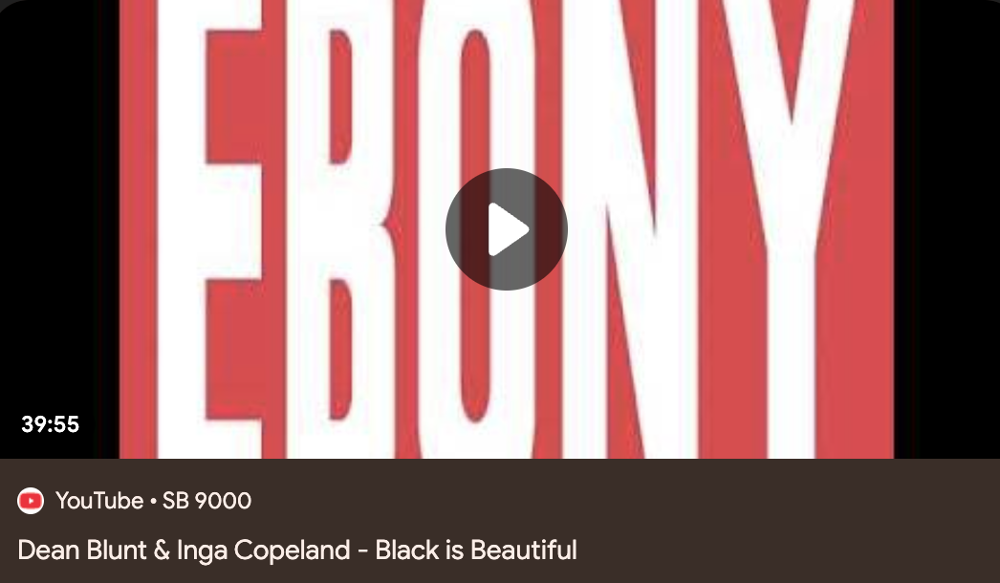

Part I
|
Luna Luna, 1987, Hamburg. |
Supposedly, an art-themed amusement park funded by Drake is in New York for a limited time. It’s called Luna Luna. After seeing some photos of it, I can say that it does in fact look as bad as it sounds, especially after you read up on the artists whose work decorate the ”attractions”: Dali, Haring, Basquiat. Yikes. According to the renowned and reputable internet encyclopedia Wikipedia, Luna Luna was originally opened in Germany in 1987 by Andre Heller whose idea was to create an amusement park designed by the "most important artists of the period". Now, the period he is referring to is not mentioned explicitly but it appears, based on the artists featured, that he means to say “Pop art”. Luckily for him, this art period, in retrospect, seemed to be the most lenient in its rules regarding participation in commercial activities like this, with artists like Andy Warhol taking a number of portrait commissions and Keith Haring doing his little doodle thing on T-shirts and building facades for some money. Thus, defying all odds, he was able to make it happen—a never before seen immersive, family-friendly experience of Fine Art.
Fast forward 36 years: you, your chosen life partner, and your newborn child find yourselves in a two-hour long line snaking around the lobby of a soundstage-esque warehouse in Battery Park, waiting to spend $70-90 on tickets to “Van Gogh: The Immersive Experience”, a 20,000 square foot room covered in Van Gogh’s biggest hits unintelligibly collaged and animated over each other in an epileptic showing of irreverence. You just need to see what the world’s newest and brightest technology can bring to your favorite artist’s long forgotten work. More specifically, you need to see The Starry Night (1889) just as the artist intended: pixelated into the LED grid of a projector head and doused over the matte, off-white walls of an industrial depot in fluorescent light.
 |
Van Gogh: The Immersive Experience, 2021, NYC. |
 |
Luna Luna, 2024, NYC. |
Now, unfortunately for you, it’ll be three years before you’ll ever get to experience anything like that again. But when it comes, it seems as promising as last time. It’s in the same warehouse—wait, no, just a very, very similar one. This time it has some of you and your kid’s favorite things—puppets, ferris wheels, and merry-go-rounds—only, you’re not allowed to interact with any of them. Damned safety concerns. You knew some of the names on the poster and you’re particularly interested in seeing some of those world-famous Haring stick figures in person, finally. When you get to the venue, you run to them in excitement. They’re all over the ferris wheel. But, hmm, it's moving too fast to get a good look. And the guard keeps telling you to take a step back! You saw some pictures of the original showing from Germany in 1987 and it looked awfully fun, why doesn’t this one seem the same? It could be because it’s indoors. Too dark, no natural light. Or maybe photos just made everything look better back then; the film grain is romantic. You leave disappointed, but the Museum of Ice Cream is close by and the Museum of Illusions is right next door to that. All in a day's work.
Part II
|
Old Chinese painting depicting someone lighting fireworks. |
In today’s world centered around the branded artist (which I have discussed previously), there appears to be a fixation on research. Cultured Magazine just announced their top 30 young artists of 2024, one of whom is Faye Wei Wei, a painter currently attending Yale. In the intro blurb, the author writes, “On the plus side, she’s been doing nothing but painting. For inspiration, she goes to the university’s famous Beinecke Rare Book and Manuscript Library, where she pores over illuminated manuscripts, diagrams of trees, and 15th-century books about fireworks. But don’t expect to see the results of this research anytime soon. The artist is strictly ‘incubating’ while in school, ‘and hopefully coming out with a body of work that’s really, really amazing.’” Also included in the blurb are some competing quotes from the artist, where she says, “It’s like absorbing all the things around me and then pushing them back out”, practically insisting her work is a product of a life of digestion. The two are at odds: the author claims her work is a reaction to studying the literature and Faye claims it is a reaction to simply living life. Maybe it’s both, but if it was really to be a pure absorption of “all the things around” her, why would she need to hit the books? Shouldn’t all the research she could ever want be within her already, waiting to be “pushed out”?
This is to say that artists seem to be obsessed with source material—finding a foreign, spiritually adjacent image somewhere in an old book or on a strange, HTML-only website and depositing it into a corner of their painting that has not yet been filled. It might be a tree or a 15th century firework, for example. It fits the brand; that brand being a well-studied MFA student who understands history and is not afraid to put the work in.
Part II.5
|
Mowalola and Ian Connor at Mowalola SS25 runway show, 2024. |
On TikTok recently, I saw a video of a guy talking about Mowalola’s SS25 collection. In the collection, Mowalola included a garment that read “Ebony” which seemed to, pretty obviously, be a reference to the mid to late 20th century magazine, Ebony. However, the TikTok asserts that she was not alluding to the magazine; instead, she was referencing Dean Blunts 2015 album Black is Beautiful which also features the Ebony logo. The man in the video insinuates further that, in an act of pure laziness and naivety, she was somehow oblivious to Dean’s reference to the magazine (based on the show notes, I guess). This calls into question a couple of things. Firstly, how important is it that she knew the original reference? Can her clothing item (self-proclaimed Art piece) hold as much merit if we assume she didn’t know? Secondly, how might the garment have physically changed upon her learning about the source reference? Would it have changed at all?
|  |
Dean Blunt's Black is Beautiful 2015. |
In another piece in the same collection, the n-word is written out on a flannel in the same font, a garment that sparked some controversy online. Within the controversy were accusations regarding flippancy and shock-value. Thankfully, streetwear’s very own guardian angel, Ian Connor, laid our concerns to rest, saying, in an interview, “It ain’t about no racism or nothing like that. It’s about Art. That’s what it is. And that piece itself was Art because it was based on Ebony magazine. It’s a spin on it.” This statement concerned me. Not because I think that Ian Connor exemplifies the fashion zeitgeist at all, but because I do think this logic is shared by many of the figureheads of high fashion. If one continued to watch the rest of the show, knew some of Mowalola’s previous hits, or even just looked at the company logo, one would also see the abundant (dare I say reliant) use of popular logos flipped upside down, reflected, or otherwise marginally remixed in some way. It’s clear that this is not Art. It is also clear, I think, that Mowalola’s insistence on her practice being Art is a product of a degeneracy in the world of clothing that somehow intuited that the recontextualization of popular media was in and of itself an act of Art. It can be concluded, then, that Warhol’s legacy of Pop has left some loose ends that are in need of tying.
Nearly every piece of clothing/Art we make is a callback to something; the commercial and artistic viability of the product relies on the viewer to be able to understand, referentially, what they’re looking at. They must be able to ground themselves in a time and space and be able to freely pivot around that time and space without getting lost. How, then, do we reference universally understood material in a manner that is both clear yet enigmatic? How do we take something dormant and activate it in a new and interesting way? How can we use (or deliberately not use) new tools and new conversations to amplify that thing, turning it into an entirely new thing? Essentially, how do we not only avoid, but position ourselves as far away as humanly possible from the cavernous warehouses of Van Gogh: The Immersive Experience or Luna Luna (2024)?
Part III
In my most recent collection, I believe, to a half-conscious, half-subconscious degree, that I’ve been in dialogue with themes regarding bootlegs, for better or for worse. That being said, I think that, for the most part, East Asian bootleg clothing (i.e. Canal Street clothing) has been intellectualized a sufficient amount; I wouldn’t have many new things to contribute to the conversation. I mainly agree with the general sentiments in online discourses: the poetics that arise from Chinese manufacturers trying to imitate western clothing are funny and interesting. In an article I read recently (which I can’t find anymore), the author says something to the extent of, to a generous eye, Chinese bootlegs could be seen as an act of rebellion because it uses the English language as a weapon of chaos(?) and/or subversion. That they’re deliberately irreverent in their word choice and sentence structure as a way of saying “fuck you” to the West. How true is that? I’m not sure, but I don’t think the author was saying it all that realistically. I believe they just thought it was a nice way to look at it. I agree with this. Thinking about it in those terms, however impractically, is a good exercise and I had come to a similar conclusion independent of this article when first encountering these types of clothes. I found it to be a fun thought experiment—thinking about how these factories operate. Who is the “designer”? How much instruction are they given? How long do they spend designing these garments? What's their relationship to the manufacturer?
|
Making a screen to screen print is a fairly permanent process. Considering the necessary labors, one would think that the least you could do was throw it into google translate, right? Is spell check really that inaccessible? Or is it just that unimportant? Or could it all be on purpose, one big art project conspired into existence by a vast network of Chinese laborers?
®Photo Credit: Shanzhai Lyric |
Part IV
In August of this year, I visited family in the Philippines for about two weeks. In metro Manila, where my grandmother lives, there is a large shopping center called “Cartimar” which hosts hundreds of vendors selling, in booths, toys and clothing, presumably produced in China. At booth I14, a rather unassuming filipina was selling assorted womenswear for 60 Philippine Pesos a piece, around $1 USD. The booth housed racks and racks of clothes, each hanger holding a wholly unique shirt, dress, polo, jacket, skirt, blouse—the variety was astounding, the silhouettes incredible, and the construction shocking.
Upon returning to The States, I knew immediately, from a seemingly spiritual place, that I wanted to make a collection of clothes that in some way captured the energy of the clothes in booth I14. Up until that point, I had been intimidated by the idea of sewing garments, mainly because I was worried about my construction being too crude and dysfunctional as I was not formally trained in operating a sewing machine (although I knew how to, basically). I was worried that it would all just fall apart (I was also worried, tangentially, about threatening my brand as an anti-fashion project, but that’s a topic for another time). After studying some of the stitching on the I14 items, I was reassured; it truly was like they were painting with fabric and thread; different textiles ran up against each other, glued together loosely by a zig-zag stitch and a prayer. It was comforting seeing the hand of the manufacturer in the construction of the garment and endearing seeing his thought-process: him stringing together a logic that justified a lace trim with a cheetah print. It was like getting up close to a painting, looking from the side and being able to see the brush strokes.
|
Paper sign in Cartimar Shopping Mall, Manila. |
Over the next couple of months I worked diligently in sewing together a slew of different frankenstein-esque prototypes from an assortment of Gildan products. I seam ripped, cut, pinned, straight-line stitched, seam ripped again (because I messed up), re-stitched, zig-zag stitched, trimmed, and ironed. I repeated this every day. It was by far and away the most labor I had put into a product, seemingly ever.
|
Process picture from the most recent collection. |
By the end of this self induced bootcamp, I was feeling rather exhausted but in a surprisingly satisfying way. I didn’t feel guilty, regretful, or depleted. Instead, I felt validated, excited, and energized. And what was even more surprising was that, by the end of it, I knew that what I had just made wasn’t Art and that I didn’t ever use that as motivation to get through it. The real life experience of walking through Cartimar and stumbling upon booth I14 was enough for me, it seemed.
Thanks for reading.
|